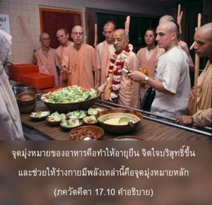
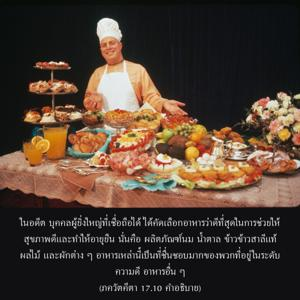
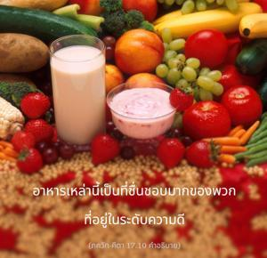
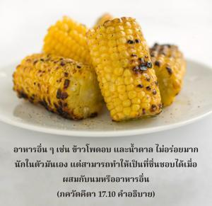
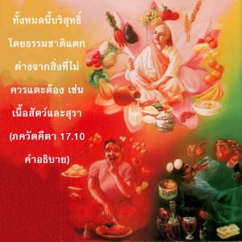

อาหารที่ปรุงเกินกว่าสามชั่วโมงก่อนรับประทาน อาหารที่ไม่มีรสชาติ เน่า และบูด อาหารที่ประกอบไปด้วยของเหลือ และสิ่งที่ไม่ควรแตะต้อง เป็นที่ชื่นชอบของพวกที่อยู่ในระดับแห่งความมืด





จุดมุ่งหมายของอาหาร คือ ทำให้อายุยืน จิตใจบริสุทธิ์ขึ้น และช่วยให้ร่างกายมีพลัง สิ่งเหล่านี้คือจุดมุ่งหมายหลัก ในอดีตเหล่าผู้ใหญ่ที่เชื่อถือได้ ได้คัดเลือกอาหารว่าดีที่สุดในการช่วยให้สุขภาพดี และทำให้อายุยืนนั่นคือ ผลิตภัณฑ์นม น้ำตาล ข้าวสาลีแท้ ผลไม้ และผักต่างๆ อาหารเหล่านี้เป็นที่ชื่นชอบมากของพวกที่อยู่ในระดับความดี อาหารอื่นๆ เช่น ข้าวโพดอบ และกากน้ำตาล ไม่อร่อยมากนักในตัวมันเอง แต่สามารถทำให้เป็นที่ชื่นชอบได้ เมื่อผสมกับนมหรืออาหารอื่นๆ ก็อยู่ในระดับความดีด้วยเช่นกัน สิ่งเหล่านี้ทั้งหมดบริสุทธิ์โดยธรรมชาติ แตกต่างจากสิ่งที่ไม่ควรแตะต้อง เช่น เนื้อสัตว์ และสุรา อาหารที่มีไขมันตามที่ได้กล่าวไว้ในโศลกแปด ไม่มีส่วนเกี่ยวข้องกับไขมันสัตว์ที่ได้มาจากการฆ่าสัตว์ ไขมันสัตว์หาได้ในรูปของนมซึ่งเป็นอาหารที่อัศจรรย์ที่สุดในบรรดาอาหารทั้งหลาย นม เนย ชีส และผลิตภัณฑ์ในประเภทเดียวกันนี้ให้ไขมันสัตว์ในรูปที่ไม่จำเป็นต้องไปฆ่าสิ่งมีชีวิตผู้บริสุทธิ์ ด้วยจิตใจที่เหี้ยมโหดแท้ๆ ที่ทำให้การเข่นฆ่าเช่นนี้ดำเนินต่อไป วิธีที่ศิวิไลในการได้มาซึ่งไขมันที่จำเป็นคือ จากนม การฆ่าสัตว์เป็นวิธีของพวกที่ต่ำกว่ามนุษย์ โปรตีนมีอยู่มากมายในถั่วกะเทาะ ดาล (ถั่วเหลือง) ข้าวสาลีแท้ (โฮลวีท )ฯลฯ
อาหารในระดับตัณหาซึ่งขมจัด เค็มจัด เผ็ดจัด หรือผสมกับพริกแดงมากเกินไปทำให้เกิดความทุกข์ เนื่องจากลดน้ำย่อยในกระเพาะ และนำมาซึ่งโรคภัยไข้เจ็บ อาหารในระดับอวิชชาหรือความมืดส่วนใหญ่เป็นจำพวกที่ไม่สด อาหารที่ปรุงนานกว่าสามชั่วโมงก่อนรับประทาน (ยกเว้นพระสาดัมอาหารที่ถวายให้องค์กฺฤษฺณแล้ว) พิจารณาว่าอยู่ในระดับความมืด เพราะว่าเน่า บูด อาหารเหล่านี้ส่งกลิ่นเหม็นซึ่งผู้คนในระดับนี้ชอบ แต่เป็นที่น่ารังเกียจของผู้ที่อยู่ในระดับความดี
อาหารเหลือที่ถวายให้องค์กฺฤษฺณแล้ว หรือถวายให้นักบุญ หรือโดยเฉพาะพระอาจารย์ทิพย์รับประทานได้ นอกนั้นอาหารเหลือถือว่าอยู่ในระดับความมืดจะทำให้ป่วยเป็นโรค อาหารเหล่านี้ถึงแม้เป็นที่ชื่นชอบมากสำหรับบุคคลในระดับความมืด พวกที่อยู่ในระดับความดีจะไม่ชอบและไม่แตะต้อง อาหารที่ดีที่สุดคือ อาหารที่เหลือหลังจากถวายให้บุคลิกภาพสูงสุดแห่งพระเจ้า ใน ภควัท-คีตา องค์ภควานฺทรงตรัสว่า พระองค์จะทรงรับอาหารที่ปรุงมาจากผัก แป้ง และนม เมื่อถวายด้วยการอุทิศตนเสียสละ ปตฺรํ ปุษฺปํ ผลํ โตยมฺ แน่นอนว่าการอุทิศตนเสียสละ และความรักเป็นสิ่งสำคัญที่บุคลิกภาพสูงสุดแห่งพระเจ้าทรงยอมรับ แต่ได้กล่าวไว้เช่นกันว่า ปฺรสาทมฺ มีวิธีปรุงโดยเฉพาะ อาหารที่ปรุงตามคำสั่งสอนของพระคัมภีร์ และถวายให้บุคลิกภาพสูงสุดแห่งพระเจ้ารับประทานได้ แม้จะปรุงไว้นานแล้วเพราะเป็นอาหารทิพย์ ฉะนั้น การทำให้อาหารปลอดเชื้อโรค และเป็นที่เอร็ดอร่อยสำหรับทุกๆ คน เราควรถวายอาหารนั้นแด่บุคลิกภาพสูงสุดแห่งพระเจ้าก่อนที่เราจะรับประทาน